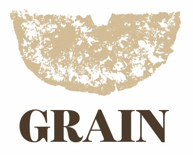
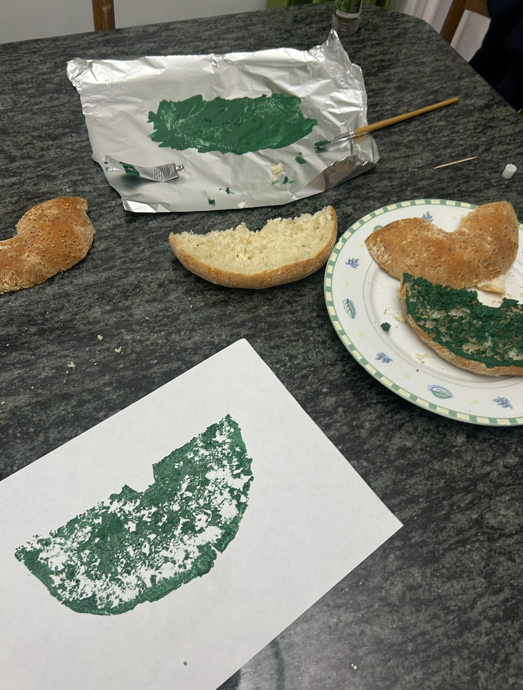
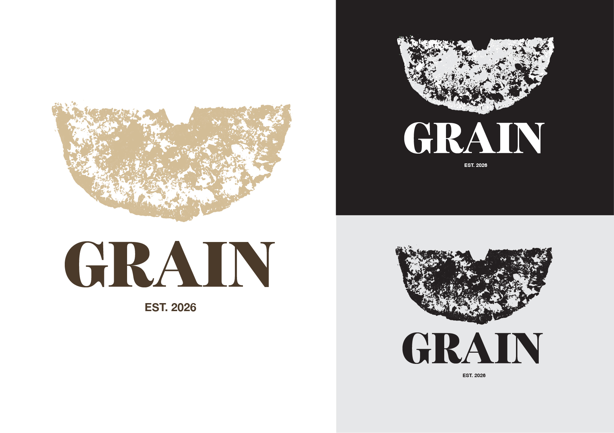
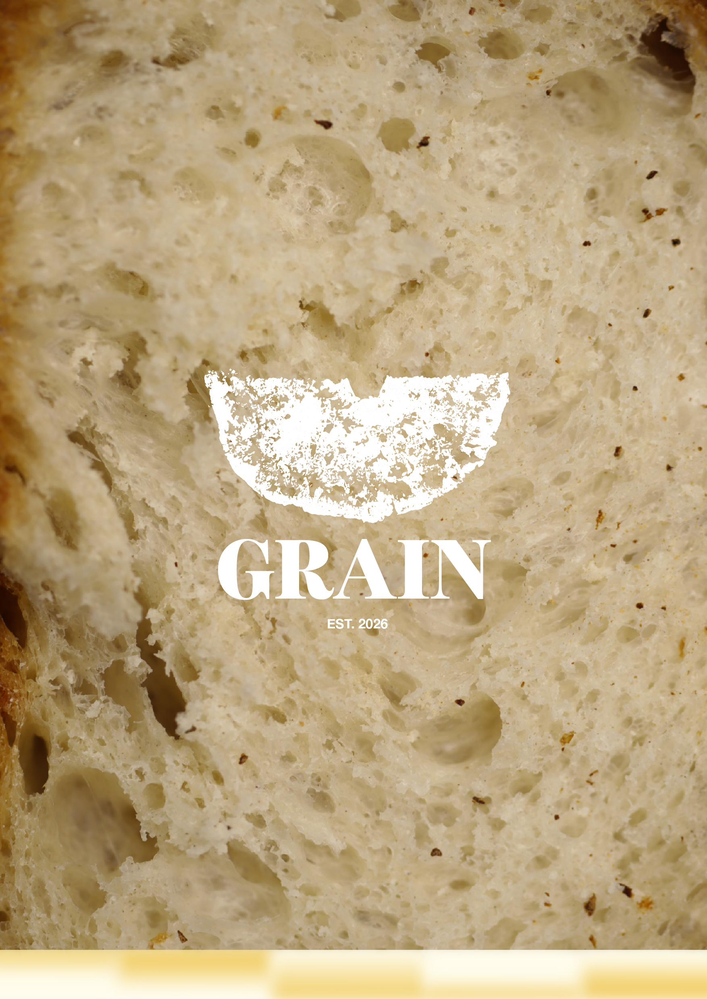
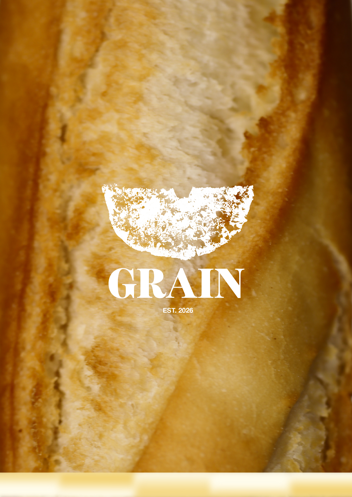
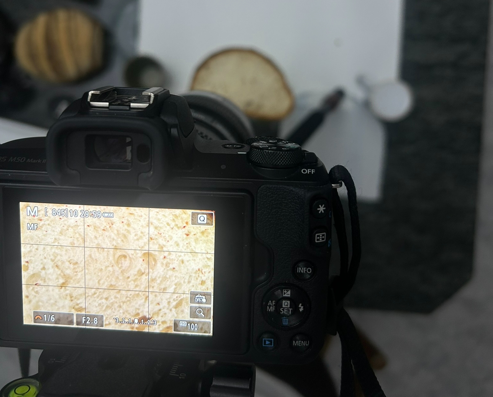
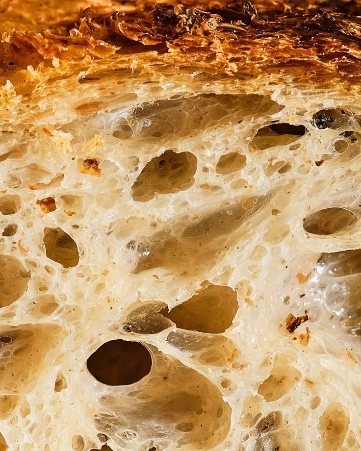

Bread Bakery Brand - Thesis Project
My thesis project, GRAIN, focused on developing a premium and highly sensorial brand identity for
a
bakery experience that went beyond traditional visual branding. The project explored how
graphic
design and visual communication can evoke emotion, appetite, and physical sensation before a
customer even interacts with the product itself. Through high-detail photography, carefully
selected
colour palettes, tactile-inspired packaging, and bread-textured print applications, I
created a
brand identity that reflected the warmth, authenticity, and craftsmanship of artisanal baking.
A central part of the branding process was the creation of the logo itself, which was
developed
through an experimental hands-on technique. I painted directly onto a slice of ftira bread and
pressed it onto paper to capture the natural texture, holes, and organic imperfections of the bread
surface. After allowing the print to dry, I scanned it digitally and refined it in Adobe Illustrator
by image tracing, adjusting colours, and constructing the final brand mark.
The project was later
exhibited at Spazju Kreattiv, where the aim was to immerse visitors in a complete sensorial
experience — proving how strong branding and graphic design can influence perception, create desire,
and build an emotional connection with a product before it is even tasted.




Experimental hands-on technique:
I painted directly onto a slice of ftira bread and
pressed it
onto paper to capture the natural texture, holes, and organic imperfections of the bread
surface.


A sensorial mood, an inspiration I been having to prove how sensory visuals can be the perfect tool for visual communication.


Creating the posters, by using a micro camera and a tripod for great stability and capture
the details and textures of the bread close-ups.
Photo editing was then taken care of,
with good
saturation and exposure so that they stand out in the exhibition.

